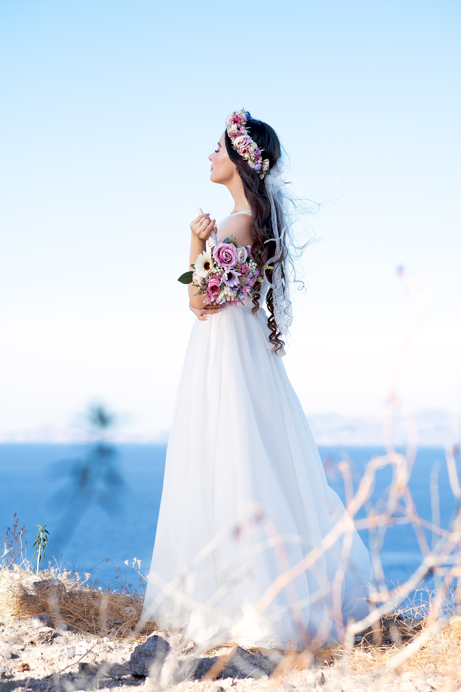

THE BRIDE
Ariana Smith is a 28 year old. She met Ryan when she started her first job as a technical writer and it was love at first sight. Ariana is the only child which makes sense considering her parents are both accountants, also meaning that they are alwaysh busy.
